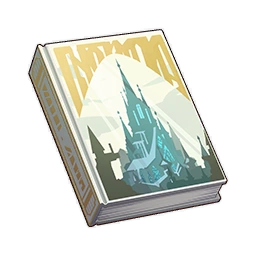

Snezhnaya · Books & Literature
General History of Snezhnaya Supplement
Three Snezhnayan readables revisit Monomakh, Yalyane Morevna, and the rise and defeat of King Miscislav through conflicting chronicles.

Three readables, not one settled account
The supplement consists of three individually named in-game readables: General History of Snezhnaya Supplement (I), (II), and (III). They return to the lives of Yalyane Morevna, Monomakh Snezhnyi, and Miscislav Bodvarovich, expanding stories associated with the main history. Their importance lies partly in what they reveal about the records themselves: each passage depends on earlier chronicles, and the editors openly question some of those chronicles’ credibility.
The three texts should be read alongside the main General History and A Brief History of the Pale Starborn. They overlap on the Pale Star War, but they do not provide a unified, fully reconciled biography or a single agreed version of Miscislav’s death.
Supplement I: Yalyane and the young Monomakh
The first readable says that little can be known of Miscislav’s early life because the Volkodlak did not keep written histories and their oral songs were often embellished. It identifies him as the youngest son of Bodvar, chieftain of the Arkudino kindred. In the account attributed to the Volkhov Chronicles, Bodvar submits to Yalyane Morevna, but she kills him and razes Arkudino. A later story about a brazen bull is dismissed as anachronistic invention, while the text still describes Yalyane’s cruelty as real within its reconstruction.
The supplement then retells a story in which Yalyane orders her young disciple Monomakh to kill members of the Harjatsk kindred according to the height of a Domovoy. Monomakh interprets the rule cleverly and uses a raised throne to prevent the people from meeting the stated condition. The source calls the tale absurd, yet argues that it may preserve one broader point: Yalyane’s killing of fae diminished after she met Monomakh. Other surviving versions vary on the Harjatsk’s fate, including whether they were spared death but enslaved.
Supplement II: the Volkodlak Alliance
The second readable follows Miscislav and Alrekr Jarizleivich. It describes a society of fae kindreds divided by ancestry, scarcity, and recurring feuds, then traces how Miscislav came to lead them under the name Volkodlak. Alrekr’s rescue of the young Miscislav from a threatened handover becomes the starting point for their alliance and the account’s explanation of how the name spread beyond its original kindred.
The narrative gives Miscislav a complicated legacy. He is credited with courage and political skill, but the text describes his unification as coercive: conquered groups are forced into a shared name, script, military structure, and intermarriage. His speeches about protecting the weak are explicitly called a lie by this narrator. The bloody oath that binds the remaining chieftains and his stand at Dalegrad show how the alliance takes shape, while the later collapse of its personal bonds explains why clans shift to Monomakh’s court.
Supplement III: accounts of Miscislav’s death
The third readable begins with an appendix that its editor rates as the lowest order of credibility. It argues that contemporary sources say Miscislav did not meet Monomakh on the field, but died when a spear passed through his skull; his reported last word was “What.” This is different in emphasis from the main General History’s short statement that Monomakh slew him, although the main book’s footnotes also describe the spear as being launched like an arrow rather than used in a direct duel.
The appendix’s own version then depicts a dying Miscislav cursing Monomakh. Since its editor warns that the source is deeply unreliable, and other accounts do not corroborate all of its details, the curse should be attributed to that appendix rather than treated as the established final exchange. The three records do not identify one complete, uncontested sequence of events.
How the supplements change the reading
Together, the supplements add a possible link between Yalyane’s treatment of the fae and Monomakh’s influence, a detailed account of how Miscislav forged the Volkodlak Alliance, and multiple descriptions of the war’s final moment. They also make the political character of the archive clearer: some narrators defend one court, denounce another, or reproduce a source only to label it absurd or unreliable.
These readables strengthen the outline of the conflict without erasing uncertainty. Their quoted chronicles disagree, their editorial judgments shape what readers are asked to trust, and the account of Miscislav’s death remains unresolved. Compare their claims with the main General History and A Brief History of the Pale Starborn rather than collapsing all three into one definitive retelling.
This is an original CoreGG reading guide, not an official HoYoverse article or a reproduction of the game text. Source links below identify the records used so you can check the original context.
Sources & references
Check these sources for the original game text and reference trail.